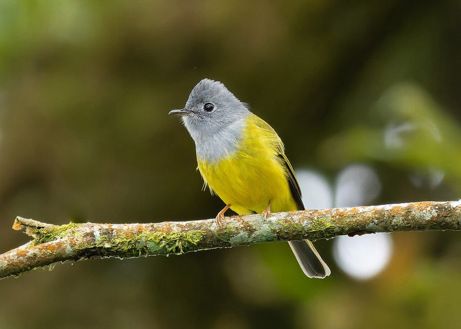

ग्रे-हेडेड कैनरी फ़्लाईकैचरGrey-headed Canary-flycatcher
Culicicapa ceylonensis · Muscicapidae · BRD-0192

- Scientific name वैज्ञानिक नाम
- Culicicapa ceylonensis (Swainson, 1820)
- Family कुल
- Muscicapidae
- Hindi हिंदी
- ग्रे-हेडेड कैनरी फ़्लाईकैचर
- Local names स्थानीय नाम
- grey-headed canary-flycatcher, grey headed canary flycatcher, canary-flycatcher
- Status here यहाँ की स्थिति
- native
- Movement आवागमन
- Winter visitor
- Known from कहाँ दर्ज
- Others have published records from the Basti–Ayodhya districts बस्ती–अयोध्या के ज़िलों से दूसरों के प्रकाशित अभिलेख
- IUCN IUCN
- LC
- Review समीक्षा
- audited and independently read
When to look कब देखें
Winter visitor शीतकालीन प्रवासी. Expected mainly in October, November, December, January, February, March, April. मुख्यतः अक्टूबर, नवंबर, दिसंबर, जनवरी, फ़रवरी, मार्च, अप्रैल में अपेक्षित।
Arrives October–November from breeding grounds in Himalayan foothills and Central Asia. Departs by March–April. Found in open forests, forest edges, and cultivated areas with scattered trees (Ali & Ripley 1968). Hangs upside-down while gleaning insects from foliage. All migrants and visitors →
Uses and possibilities उपयोग और संभावनाएँ
Drawn from the documented uses in the profile below, where each is labelled traditional, current or a research lead. All uses →
Tell it apart from इनसे अलग पहचानें
ग्रे-हेडेड कैनरी फ़्लाईकैचर / Grey-headed Canary-flycatcher
Culicicapa ceylonensis (Swainson, 1820) — Muscicapidae
ग्रे-हेडेड कैनरी फ़्लाईकैचर — सर्दी में उत्तर से आने वाली छोटी चिड़िया, जो पेड़ों की पत्तियों में उल्टी-सीधी लटकती है कीटों को खोजती है। सिर धूसरा और नीचे पीला-हरा — बहुत प्यारी चिड़िया। तेजी से पत्ते-पत्ते पर कूदती है।
Quick Identification त्वरित पहचान
| Feature | Description |
|---|---|
| Size | Small; 11–12 cm total length |
| Head | Grey or slate-coloured (diagnostic) |
| Upperparts | Olive-green back and wings |
| Underparts | Yellow or greenish-yellow |
| Tail | Short, olive |
| Bill | Small, black, pointed |
| Legs | Dark |
| Behaviour | Active, hangs upside-down; restless gleaner |
Field tip: Small winter visitor with grey head and yellow underparts. Stays in foliage and actively gleans insects. Often hangs upside-down while searching. Solitary or in pairs. Listen for soft calls.
हिंदी — कैसे पहचानें:
सर्दी की छोटी चिड़िया। सिर धूसरा, नीचे पीला। पेड़ों की पत्तियों में उल्टी-सीधी लटकती है। तेज़ी से कूदती है।
Morphology आकारिकी
Biometrics:
| Measurement | Range |
|---|---|
| Total length | 110–120 mm |
| Wing (flattened chord) | 60–67 mm |
| Tail | 38–45 mm |
| Tarsus | 12–14 mm |
| Bill (culmen) | 10–12 mm |
| Weight | 7–9 g |
Size: 11–12 cm long; small flycatcher.
Plumage: Head and nape slate-grey to grey-brown. Back and wings olive-green to yellow-green. Underparts bright yellow or greenish-yellow. Throat yellow. Tail short, olive-green.
Bill: Small, black, pointed; slightly hooked for gleaning insects.
Legs: Dark grey or blackish; short.
Eyes: Dark brown.
Sexes: Similar; slight dimorphism with males slightly brighter yellow.
Vocalisations. Call repertoire:
- Contact call: Soft tsi or sit notes.
- Song: Brief, quiet warbling; not prominent.
- Alarm call: Sharp, penetrating chit or chip.
हिंदी: सिर धूसरा या पीला-भूरा। पीठ हरा। नीचे चमकदार पीला। बहुत छोटी। आवाज़ नरम, सुनने में मुश्किल।
Behaviour & Ecology व्यवहार और पारिस्थितिकता
Foraging ecology: Active gleaner; searches foliage methodically, often hanging upside-down (acrobatic). Feeds exclusively on small insects. Feeds on:
- Small flies and gnats (Diptera)
- Small moths and butterflies
- Tiny beetles
- Small spiders
- Small insects in foliage
Habitat use: Prefers open forests and forest edges with mixed vegetation. Often seen in gardens and cultivated areas with fruit trees during winter.
Social behaviour: Solitary or in pairs. May join mixed feeding flocks with other warblers and flycatchers.
Winter behaviour: Arrives in small waves; settles into territories but more fluid than residents. Feeds actively throughout the day.
Activity: Diurnal; feeds throughout the day.
हिंदी: पत्तियों में छिपे कीटों को खोजता है। अक्सर उल्टा लटक कर कीट निकालता है। अकेला या जोड़े में। सर्दी में यहाँ आकर खुद को व्यस्त रखता है।
Life Cycle / Phenology जीवन चक्र
Winter visitor: Arrives October–November from breeding grounds in Himalayan foothills and Central Asia. Departs March–April.
Breeding: Does not breed in eastern UP; breeding occurs in foothills (March–May).
Non-breeding: Wintering period is feeding and territory maintenance; some site fidelity to winter territories across years.
Moult: Complete moult before arrival at wintering grounds; maintains plumage through winter.
| Month | Event |
|---|---|
| October–November | Arrival from breeding grounds |
| December–February | Peak presence; regular feeding in forested areas |
| March–April | Departure to breeding grounds |
| May–September | Absent from region |
हिंदी: अक्टूबर-नवंबर में उत्तर से आता है। दिसंबर-फरवरी में सबसे ज्यादा दिखता है। मार्च-अप्रैल तक पहाड़ों की ओर चला जाता है।
Host Plants or Prey आहार
| Food Type | Examples | Feeding Behaviour |
|---|---|---|
| Small flies | Diptera species | Glean from foliage; acrobatic |
| Small moths | Small Lepidoptera | Glean from foliage |
| Small beetles | Tiny Coleoptera | Glean from foliage |
| Spiders | Tiny web spiders | Glean from webs |
हिंदी: छोटी-छोटी मक्खियाँ और पतंगे खाता है। पत्तियों से कीड़े तोड़ता है। मकड़ियों को भी खोज निकालता है। सिर्फ कीट-भोजी है।
Predators / Natural Enemies शत्रु
- Avian predators: Shikra and small raptors; rarely caught due to small size and agility
- Mammalian predators: Snakes (occasionally)
हिंदी: छोटी शिकारी चिड़ियों से खतरा। तेजी से उड़ने से अक्सर बचता है। साँपों से कभी खतरा।
Agricultural / Human Relevance कृषि प्रासंगिकता
Protected status: Grey-headed Canary-flycatcher is protected under the Wildlife (Protection) Act 1972, Schedule IV. All wild birds listed are protected; hunting and trapping are prohibited.
Pest control: Beneficial in gardens and agricultural areas adjacent to forests because it feeds on small insects that may damage plants.
Forest indicator: Presence indicates healthy forest structure with mixed vegetation.
हिंदी: यह पक्षी विधि अधिनियम 1972 की सुरक्षित है। बागों के कीटों को खा कर मदद करता है। जंगल की सेहत का संकेत है।
Expected Locally स्थानीय रूप से अपेक्षित
Not a field record. Written from published accounts for eastern Uttar Pradesh. No confirmed local sighting yet — if you have seen it, that is what the atlas needs.
अभी तक स्थानीय पुष्टि नहीं। यह विवरण प्रकाशित स्रोतों से है, किसी अवलोकन से नहीं।
This species is NOT a field record. Distribution based on published sources. Flag P (range expectation) noted: Grey-headed Canary-flycatcher is expected in forests and cultivated areas throughout eastern Uttar Pradesh during winter months.
GBIF holds published records from these districts. The species is a regular winter visitor to suitable habitats.
Habitat requirements: Open forests, forest edges, gardens with mixed vegetation. Less dependent on specific habitat than residents.
Seasonal presence: October through April; absent rest of year.
Nearest published records: Ali & Ripley (1968) and subsequent surveys document regular presence during winter months.
First record needed: A dated photograph showing the bird clearly (small size, grey head, and yellow underparts distinctive) in a specific location (with GPS coordinates) submitted through the About page.
हिंदी: यह स्थानीय रूप से अपेक्षित है, न कि देखे गए बतौर प्रेक्षण। अक्टूबर से अप्रैल तक बड़े पेड़ों पर मिल सकता है। हरे-भरे बागों और जंगल के किनारों में खोजो। पहला रिकॉर्ड के लिए स्पष्ट फोटोग्राफ चाहिए।
Distribution वितरण
Global range: Himalayan foothills and Southeast Asia. Breeding range from foothills; winters in lowland regions.
In India: Distributed across Himalayan foothills (breeder) and throughout peninsula and Gangetic plains (winter visitor).
In Uttar Pradesh: Winter visitor to forested and cultivated areas throughout the state.
In Basti district / eastern UP: Regular winter visitor in open forests and cultivated areas with adequate tree cover and vegetation. October through April.
Research Questions शोध प्रश्न
- What are the precise breeding grounds and wintering grounds of Grey-headed Canary-flycatcher populations in eastern UP?
- What is the territory fidelity and philopatry (return to same wintering site) across multiple years?
- How does insect availability and prey diversity vary between early and late winter?
- क्या इस चिड़िया के सर्दियों की आबादी में साल-दर-साल बदलाव होता है?
- What dietary differences exist between different age and sex classes, and how does body condition change through winter? (A child can monitor specific trees and track visits by these birds through the season.)
- क्या बागों में जैविक और रासायनिक कीटनाशकों के उपयोग का इस पक्षी की संख्या पर प्रभाव है?
Similar Species मिलती-जुलती प्रजातियाँ
| Species | Key Difference | Hindi | Field Rule | |
|---|---|---|---|---|
| [[verditer_flycatcher\ | Verditer Flycatcher]] (Eumyias thalassinus) | Larger (17 cm); verditer-blue plumage; winter visitor in higher elevations | पन्ना फ्लाइकैचर | Verditer is much larger and blue. Grey-headed is smaller and grey-headed with yellow underparts. |
| Yellow-bellied Sunbird (Cinnyris asiaticus) | Larger (12 cm); glossy black; purple throat; different foraging | बैंगनी सूर्यपक्षी | Sunbird is more colourful with glossy plumage. Grey-headed is duller and more greenish. |
Field rule: Grey-headed Canary-flycatcher is a small grey-headed bird with yellow underparts that hangs upside-down in foliage. No other small flycatcher in eastern UP during winter combines these features.
Taxonomy & Classification वर्गीकरण
Original description. Described by Swainson in 1820 from Ceylon (Sri Lanka). Type locality Sri Lanka.
Subspecies. Multiple subspecies recognised; C. c. ceylonensis occurs in Indian subcontinent and Central Asia.
Family and order placement. Order Passeriformes; family Muscicapidae (Old World flycatchers). Genus Culicicapa monotypic (single species).
Phylogenetic notes. Close relationship to Niltavas and other small Muscicapidae; distinct genus among Asian flycatchers.
IUCN status rationale. Assessed as Least Concern (LC). Widely distributed on wintering grounds; population stable. Not threatened by hunting or habitat loss in wintering areas.
हिंदी: यह छोटी चिड़िया गर्मी में हिमालय में रहती है। सर्दी में भारत के मैदानों में आती है। दुनिया भर में सुरक्षित प्रजाति है।
Photo Gallery फोटो गैलरी
No photos yet — add field photos to media/species/grey_headed_canary_flycatcher/ and run node scripts/sync_photos.js.
Wanted photos:
- Perched showing grey head and yellow underparts
- Gleaning on foliage (acrobatic posture)
- Hanging upside-down
- Pair interaction (if in pairs)
- In flight
References संदर्भ
- Swainson, W. (1820). Zoological Illustrations. Vol. 1, Plate 19. Baldwin, Cradock & Joy, London.
- Ali, S. & Ripley, S. D. (1968). Handbook of the Birds of India and Pakistan. Vol. 2 (Game-birds to Pigeons). Oxford University Press, Delhi. Pp. 338–340.
- Rasmussen, P. C. & Anderton, J. C. (2005). Birds of South Asia: The Ripley Guide. Smithsonian Institution and Lynx Edicions, Barcelona. Vol. 2, p. 509.
- Cramp, S. & Perrins, C. M. (Eds.). (1993). Handbook of the Birds of Europe, the Middle East and North Africa: The Birds of the Western Palearctic. Vol. 8 (Crows to Finches). Oxford University Press. Pp. 865–866.
- GBIF Occurrence Data — Culicicapa ceylonensis, India. Global Biodiversity Information Facility.
- IUCN Red List (2023). Culicicapa ceylonensis — assessment. IUCN, Cambridge. Status: Least Concern.
Source file: species/fauna/birds/grey_headed_canary_flycatcher.md